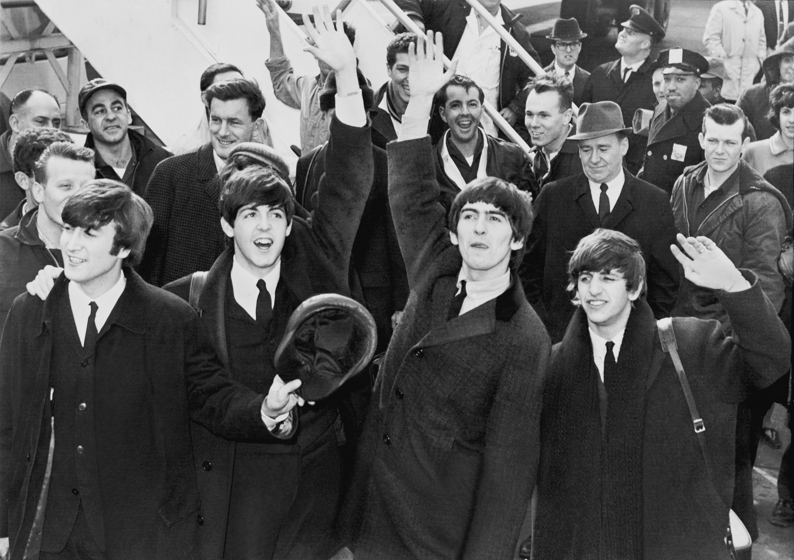

HISTORY
Author: Wikipedia, 28th May, 2021

Pictured above: The Beatles
Led by primary songwriters Lennon and McCartney, the Beatles built their reputation playing clubs
in Liverpool and Hamburg over three years from 1960, initially with Stuart Sutcliffe playing bass.
The core trio of Lennon, McCartney and Harrison, together since 1958, went through a succession
of drummers, including Pete Best, before asking Starr to join them in 1962. Manager Brian Epstein
moulded them into a professional act, and producer George Martin guided and developed their
recordings, greatly expanding their domestic success after their first hit, "Love Me Do", in late
1962. As their popularity grew into the intense fan frenzy dubbed "Beatlemania", the band acquired
the nickname "the Fab Four", with Epstein, Martin and other members of the band's entourage sometimes
given the informal title of "fifth Beatle".
THE BRITISH INVASION
Author: Wikipedia, 30th May, 2021

Pictured above: The Beatles arriving at John F. Kendedy Interantion Airport
By early 1964, the Beatles were international stars, leading the "British Invasion" of the United States
pop market, breaking numerous sales records, and inspiring Britain's cultural resurgence. They soon made
their film debut with A Hard Day's Night (1964). From 1965 onwards, they produced records of greater
complexity, including the albums Rubber Soul (1965), Revolver (1966) and Sgt. Pepper's Lonely Hearts Club
Band (1967), and enjoyed further commercial success with The Beatles (also known as "the White Album", 1968)
and Abbey Road (1969). Heralding the album era, their success elevated the album to be the dominant form of
record consumption over singles; they also inspired a greater public interest in psychedelic drugs and
Eastern spirituality, and furthered advancements in electronic music, album art and music videos.
In 1968, they founded Apple Corps, a multi-armed multimedia corporation that continues to oversee projects
related to the band's legacy. After the group's break-up in 1970, all four members enjoyed success as solo
artists. Lennon was shot and killed in 1980, and Harrison died of lung cancer in 2001. McCartney and Starr
remain musically active.